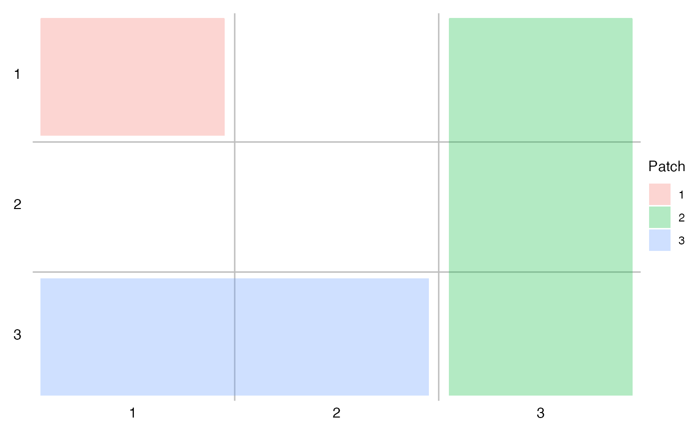
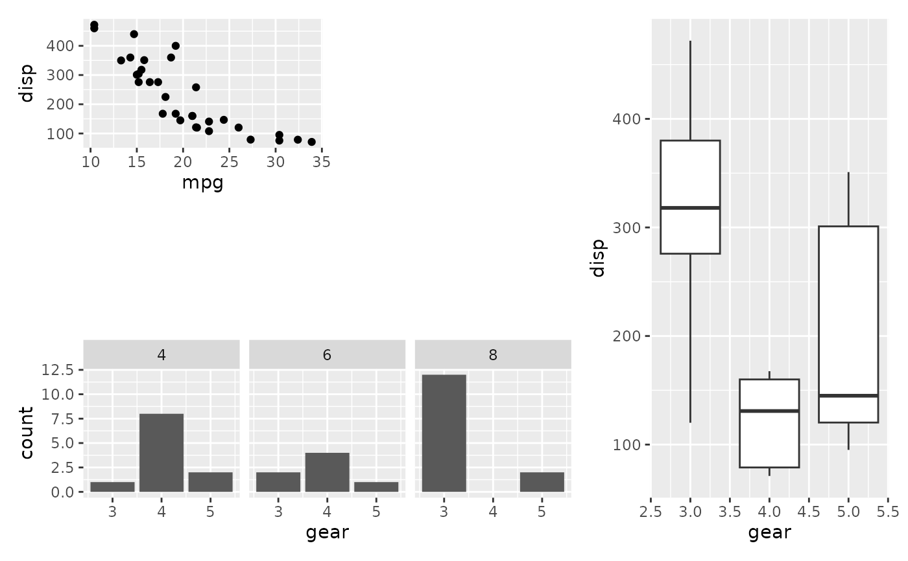

This is a small helper used to specify a single area in a rectangular grid
that should contain a plot. Objects constructed with area() can be
concatenated together with c() in order to specify multiple areas.
Arguments
- t, b
The top and bottom bounds of the area in the grid
- l, r
The left and right bounds of the area int the grid
Details
The grid that the areas are specified in reference to enumerate rows from top
to bottom, and coloumns from left to right. This means that t and l
should always be less or equal to b and r respectively. Instead of
specifying area placement with a combination of area() calls, it is
possible to instead pass in a single string
areas <- c(area(1, 1, 2, 1),
area(2, 3, 3, 3))is equivalent to
areas < -"A##
A#B
##B"For an example of this, see the plot_layout() examples.
Examples
library(ggplot2)
p1 <- ggplot(mtcars) + geom_point(aes(mpg, disp))
p2 <- ggplot(mtcars) + geom_boxplot(aes(gear, disp, group = gear))
p3 <- ggplot(mtcars) + geom_bar(aes(gear)) + facet_wrap(~cyl)
layout <- c(
area(1, 1),
area(1, 3, 3),
area(3, 1, 3, 2)
)
# Show the layout to make sure it looks as it should
plot(layout)

# Apply it to a patchwork
p1 + p2 + p3 + plot_layout(design = layout)
